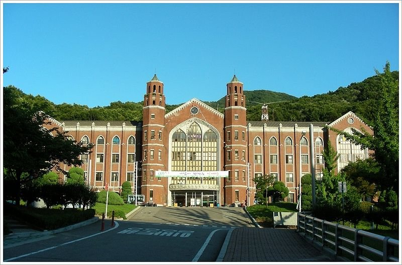

한국외국어대학교의 정시 표를 보면 한 가지가 눈에 들어옵니다. 같은 대학인데 계열에 따라 영어와 탐구의 무게가 서로 뒤집힙니다. 어문·인문계열은 영어가 20%, 탐구가 20%인데, 자연·공학계열은 영어가 15%로 줄고 탐구가 30%로 뜁니다. 이 글은 그 표를 그래서 어느 과목을 먼저로 바꿔 읽습니다. 고3 영어과외에 시간을 얼마나 남길지 정하는 기준이 됩니다.
| 계열 | 국어 | 수학 | 영어 | 탐구 |
|---|---|---|---|---|
| 어문·인문계열 | 30% | 30% | 20% | 20% |
| 자연·공학계열 | 20% | 35% | 15% | 30% |
정시는 전 전형이 수능 100%로, 학생부는 반영하지 않습니다. 상경·사회과학계열처럼 위 두 줄과 또 다른 기준을 쓰는 군이 따로 있으니, 지망 학과가 어느 군에 들어가는지는 요강에서 직접 확인해야 합니다.
국어 30, 수학 30, 영어 20, 탐구 20입니다. 30과 20의 차이뿐이라 한 과목만 잘해서 되는 표가 아닙니다. 수학 비중이 20%대인 다른 인문계열 표와 비교하면 국어만으로 메우기가 어렵고, 대신 한 과목이 흔들려도 손실이 한꺼번에 오지는 않습니다.
현실적인 결론은 이렇습니다. 어문·인문계열을 보고 있다면 가장 약한 과목을 올리는 쪽이 가장 약한 과목을 버리는 쪽보다 유리합니다. 30%짜리 두 과목 중 하나를 놓으면 남은 셋으로는 복구가 안 됩니다.
주요 대학의 정시에서 영어는 10~15%에 머무는 경우가 많습니다. 어문·인문계열의 영어 20%는 그 가운데 높은 편으로 꼽힙니다. 탐구(20%)와 같은 무게이고, 국어·수학(각 30%)의 3분의 2입니다.
여기서 주의할 점이 있습니다. 한국외국어대학교는 영어를 점수가 아니라 등급별 환산점수로 반영합니다. 등급이 한 칸 내려가면 그만큼이 한 번에 빠지는 구조입니다. 등급 사이의 점수 차이는 자료마다 다르게 정리돼 있어 여기에 숫자를 적지 않았으니, 정확한 표는 요강에서 확인하세요. 다만 방향은 분명합니다. 어문계열 지망이면 영어는 줄이는 과목이 아니라 등급을 지키는 과목입니다.
자연·공학계열은 수학 35%가 1순위입니다. 그런데 2순위가 국어(20%)가 아니라 탐구 30%입니다. 탐구를 두 과목 본다면 한 과목당 15%씩, 즉 영어(15%) 한 과목과 탐구 한 과목의 무게가 같습니다.
탐구는 백분위를 바탕으로 만든 자체 변환표준점수로 반영하고, 상위 2개 과목을 합산합니다. 산출 방식은 해마다 조정되니 숫자로 계산하려 들 필요는 없습니다. 대신 이 점은 기억할 만합니다. 사회탐구와 과학탐구 어느 쪽을 골라도 가산점은 없습니다. 계열별 선택과목 제한도 없어, 확률과 통계나 사회탐구를 본 학생도 자연계열에 지원할 수 있습니다. 즉 탐구에서 유리한 과목을 찾기보다 내가 백분위를 가장 높게 받을 수 있는 두 과목을 고르는 편이 맞습니다.
학생 수준에 맞는 선생님을 24시간 안에 추천해 드려요. 상담은 무료입니다.